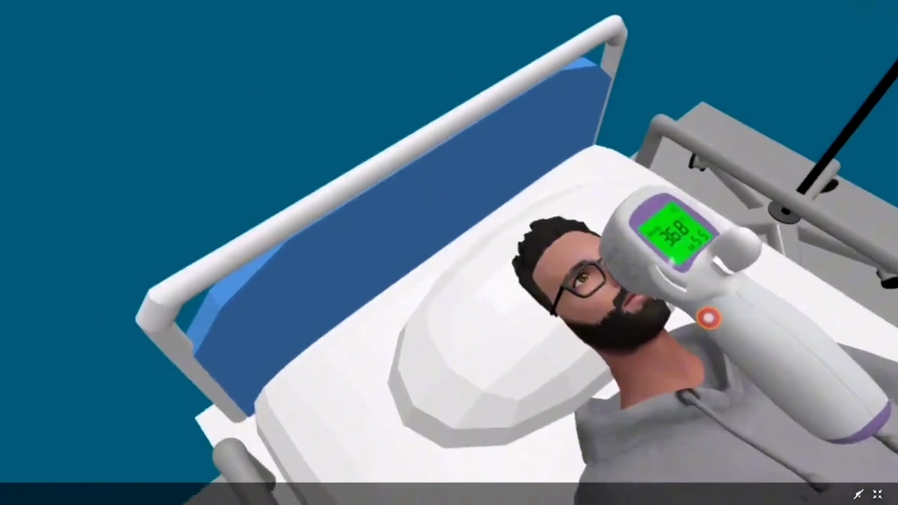
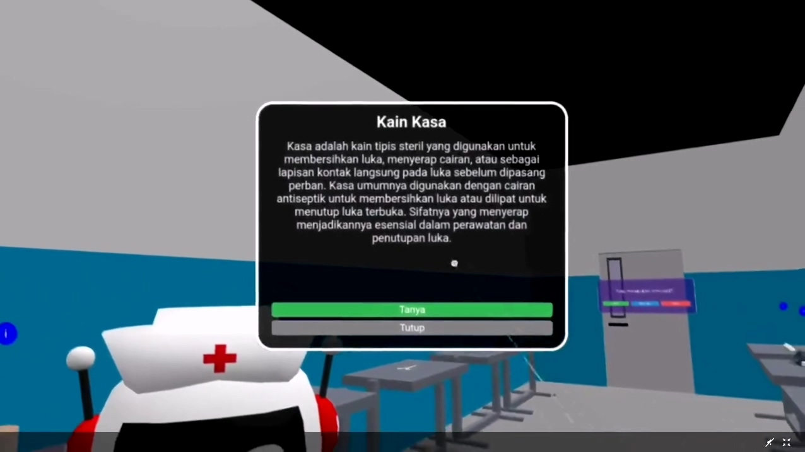
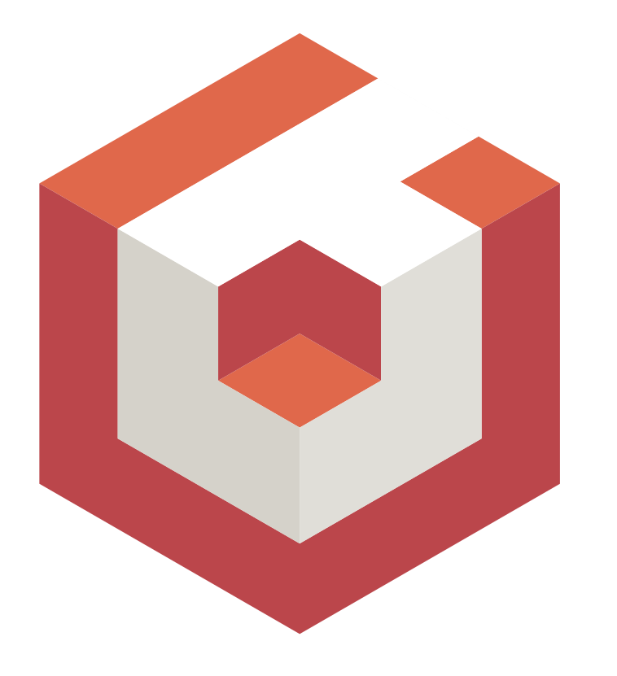
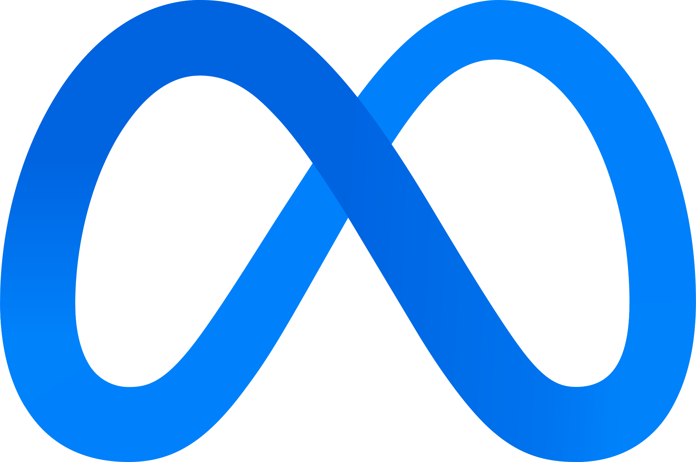

STORY OF THIS PROJECT

Langkah awal di semester 3 membawa sebuah tantangan besar dalam mata kuliah Workshop Augmented Reality / Virtual Reality. Tantangan itu mewujud dalam sebuah proyek ambisius bernama VirtuCare, sebuah game edukasi berbasis Virtual Reality (VR) yang dirancang khusus untuk mengenalkan alat -alat dasar kedokteran. Alih -alih menggunakan game engine konvensional, proyek ini dibangun menggunakan engine Babylon.JS, memungkinkan dunia virtual tersebut diakses langsung dengan mudah melalui halaman website.

Proses pengembangan dilakukan secara intensif dengan mengandalkan device Meta Quest 2 sebagai perangkat utama untuk menguji setiap interaksi. Di dalam tim, fokus utama ditumpahkan pada dua sektor krusial: merancang visual UI Frontend agar tetap intuitif di dalam ruang virtual, serta menyusun sistem physics agar setiap gerakan tangan dan interaksi objek terasa nyata bagi pengguna.

Di dalam simulasi medis, user akan ditemani oleh asisten robotik berkostum suster bernama MediBot yang bertugas memberikan panduan. Ketika salah satu objek seperti Kain Kasa diaktifkan, modul pembelajaran akan memunculkan jendela teks interaktif yang menjelaskan fungsi steril, kegunaan medis, serta petunjuk penutupan luka terbuka secara higienis bagi pengguna.

Perjalanan melahirkan VirtuCare menjadi sebuah roda berputar yang penuh dengan dinamika suka dan duka. Kilas balik perjuangan dimulai dari momen penuh kelegaan saat konsep game ini akhirnya mendapat lampu hijau dari dosen pembimbing. Namun, fase berikutnya adalah ujian kesabaran yang sesungguhnya. Hari-hari dipenuhi dengan proses debugging kode yang menguras pikiran, di mana satu baris kesalahan kecil bisa membuat seluruh simulasi VR mendadak lumpuh dan tidak berjalan semestinya
TOOLS USED FOR THIS PROJECT

BABYLON.JS
META QUEST 2DEMO & GAMEPLAY VIDEO
Mari kita bangun sesuatu yang luar biasa bersama
Terbuka untuk kesempatan magang, project freelance atau kolaborasi riset.